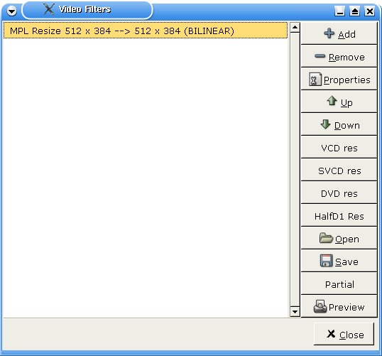
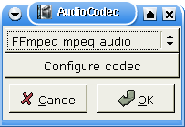

|
Tutoriel de conversion de Divx en VCD 1.Préparatifs Cette page donne un exemple de codage d'un AVI provenant d'un Divx en VCD. Vous pourre en déduire les réglages pour encoder en SVCD ou en DVD.Le cas d'un DVD est légèrement différent car Avidemux est capable de générer directement des fichiers mpaeg PS (audio+vidéo) corrects (voir DVD).Tout Avi avec les codecs appropriés peut être encodé en VCD : Divx+MP3 par exemple (notez que vous aurez besoin de mad pour gérer le flux MP3). L'export en VCD s'effectue en 3 étapes : encodage vidéo, encodage audio et multiplexage. Nous allons commencer par redimensionner la vidéo pour qu'elle corresponde aux spécifications d'un CD vidéo. C'est-à-dire 352*240 pour du NTSC et 352*288 pour du PAL. Après avoir chargé l'Avi source, ouvrez la fenêtre des filtres vidéo avec F1.  Cliquez sur le bouton VCD res de la colonne de droite. Il permet de redimensionner automatiquement la vidéo et d'ajouter une bordure noire afin d'obtenir un format correct sans modifier les proportions de l'image. Sélectionnez ensuite le codec vidéo avec le bouton vcodec. Choisissez VCD. Rien d'autre à configurer ici. Enfin, choisissez File->Save video et sélectionnez le fichier pour le flux vidéo, /tmp/videocd.m1v par exemple. Vous pouvez à présent vous plonger dans le reste de la documentation d'Avidemux et revenir quelques heures plus tard.
Il y a toutes les chances pour que l'audio soit codé dans un format incompatible avec le VCD, aussi, il va falloir le réencoder. Passez l'audio en mode process avec F6 et sélectionnez le codec audio avec F4.  Sélectionnez FFmpeg audio et cliquez sur Configure Codec. Choisissez ensuite Stereo et 224 kbits.
Nous allons à présent ajouter quelques filtres audio qui peuvent être utiles ; appuyez sur F2. Il y a trois possibilités ici : Sélectionnez File -> Save audio et par exemple /tmp/videocd.mp2. Retournez à vos lectures favorites et revenez une heure plus tard. 2.Après Avidemux Vos flux audio et vidéo sont prêts à présent. Utilisez mplex de cette façon : mplex -S XXX -f 1 -o /tmp/videocd.mpg videocd.m1v videocd.mp2 Remplacez la valeur XXX par la taille de votre CD : 790 pour un CD de 80 mn. Cette opération vous donne un fichier videocd.mpg valide. Il est de créer le VCD. Pour créer un VCD simple, sans chapitres, ni menu, etc., il suffit de faire. vcdimager -t vcd20 videocd.mpg Cela génère deux fichiers videocd.cue et videocd.bin, que vous pouvez graver avec cdrdao. 3.Bash rulez La même chose sans l'interface Vous pouvez effectuer les mêmes opérations à partir de la ligne de commande. avidemux --load input.avi --vcd-res --save-vcd /tmp/videocd.m1v --audio-process --audio-normalize --audio-resample --audio-codec MP2 --audio-bitrate 224 --save-uncompressed-audio /tmp/videocd.mp2 --quit Cela vous permet de créer un script de conversion entièrement automatique d'un avi en VCD. |